Storyboard du guide papier
Chaque étape du document, avec le texte à gauche et la copie d'écran telle qu'elle sera imprimée à droite. Ce qui est cadré dit quel élément de la page l'image suit : c'est lui qu'on change quand l'image ne montre pas ce que le texte annonce. Cochez un verdict par étape ; ils sont gardés dans ce navigateur, et le bouton du bas les recopie pour me les envoyer.
Chapitre 1Le portail en un coup d'œil
Bienvenue dans l'espace enseignant de francis.
En quelques minutes, nous allons faire le tour de vos outils : ouvrir un groupe, donner des dates à vos activités, suivre vos élèves et sortir le matériel de la semaine.
la fenêtre entière
Tout tient dans une seule page.
En haut, une bande blanche : le nom de la plateforme, et à droite votre session. C'est aussi de là que vous vous déconnectez, à la fin de votre journée.
.fr-barre
Juste en dessous, votre groupe.
C'est la première chose à choisir, et tout le reste en découle : le niveau du groupe décide de ce que vous verrez du catalogue et du matériel. Changez de groupe, et vous changez de classe.
.pe-contexte .card
Sous le groupe, neuf boutons rangés en trois familles.
Le cours : le catalogue, la planification, le matériel. Ma classe : les élèves et leurs codes, la progression, la séance sans compte. Et les outils, qui s'ouvrent chacun dans un nouvel onglet.
.pe-liens
Au bout de la ligne, un résumé dit où vous en êtes : combien d'élèves, et combien d'activités déjà planifiées sur l'ensemble du catalogue.
#resumeGroupe
Dessous, le programme du jour : ce qui ouvre et ce qui ferme aujourd'hui.
S'il est vide, c'est que rien ne bouge — vos activités déjà ouvertes, elles, restent accessibles.
votre capture déposée (01-tour-du-portail_f.png)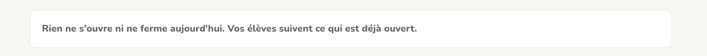
Chapitre 2Ouvrir un groupe
Avant tout le reste, il faut un groupe : un par classe, chacun avec ses élèves, ses dates et sa progression.
Pour en ouvrir un, cliquez sur « Nouveau groupe », en haut de la page.
votre capture déposée (05-groupes_a.png)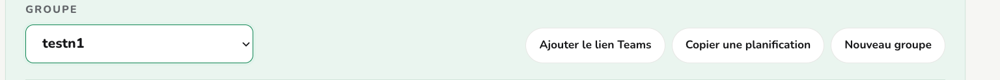
Le formulaire demande deux choses.
D'abord un nom : celui qui vous parle à vous, pas un code. « Avant-midi — Marie », par exemple.
votre capture déposée (05-groupes_c.png)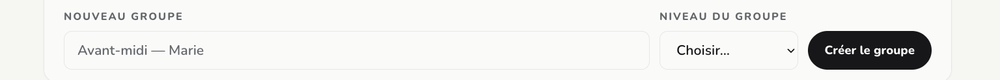
Ensuite le niveau.
C'est le réglage le plus important du portail : il décide de ce que le groupe voit. Le catalogue, le matériel, la séance sans compte. Un groupe de niveau quatre ne verra jamais les activités du niveau six. Choisissez-le, puis cliquez sur « Créer le groupe ».
#formGroupe — après le geste 5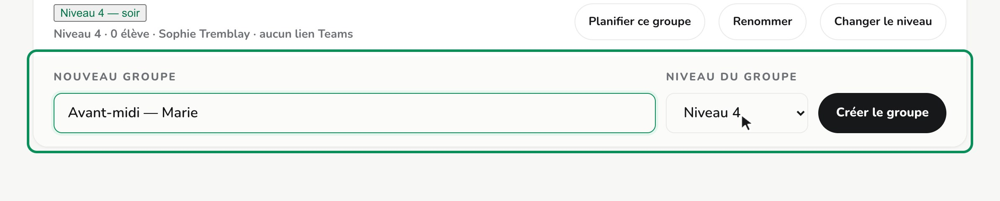
Le groupe est créé, et le portail vous ramène à la planification, avec ce groupe en tête de page.
Il part vide. Le catalogue d'activités, lui, est commun à toute l'équipe : personne ne recrée le contenu. Ce qui vous appartient, ce sont les dates que vous posez dessus.
votre capture déposée (05-groupes_e.png)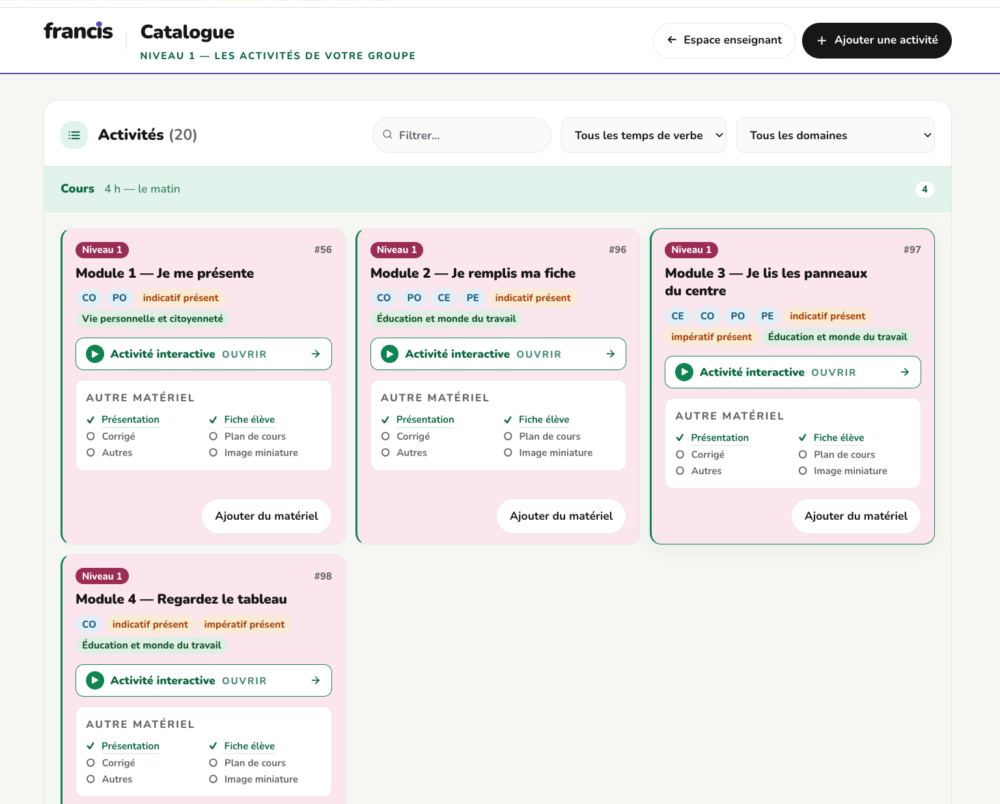
Chapitre 3Planifier : donner une date
Voici la règle la plus importante du portail, et la seule qu'il faut vraiment retenir.
Une activité sans date n'existe pas pour l'élève. Un groupe neuf part complètement vide : tant que vous n'avez pas donné de date d'ouverture, la classe ne voit rien.
#listeActivites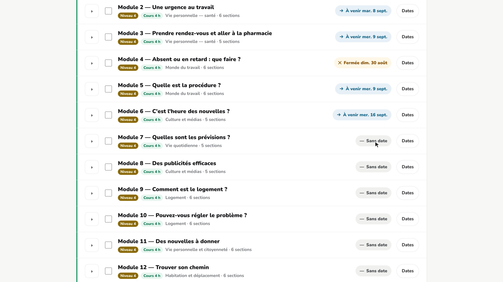
Pour trouver une activité, un champ de recherche, et trois filtres.
Cours, ce sont les modules de quatre heures du matin. Ateliers, les activités de deux heures de l'après-midi. La recherche cherche large : le titre, le domaine, même un temps de verbe.
votre capture déposée (02-planifier_b.png)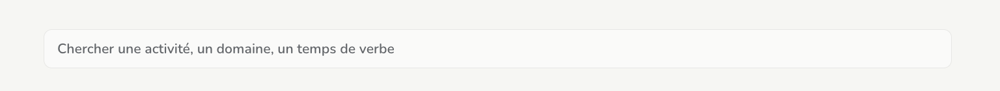
En dessous, la liste.
Chaque rangée porte une pastille d'état, à droite. Elle a toujours une couleur, un symbole et un mot : vous n'avez jamais à deviner d'après la couleur seule.
#listeActivites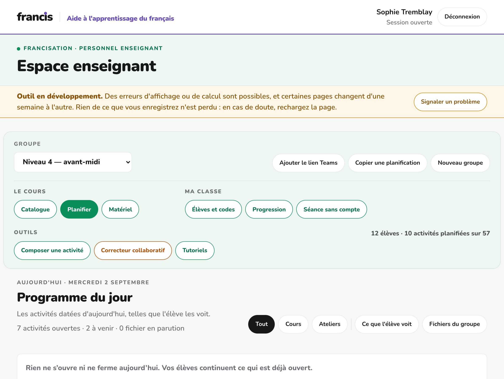
Quatre états, et c'est tout.
Tiret, sans date : l'élève ne la voit pas. Flèche, à venir : la date est posée, elle arrive. Crochet, ouverte : l'élève peut y répondre. Croix, fermée : il peut relire, mais plus répondre.
la fenêtre entière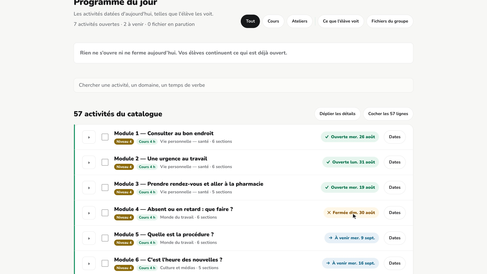
Cochez maintenant les activités de la semaine.
Dès la première case, une barre apparaît en bas de l'écran et vous suit. C'est là que tout se décide.
#barreAction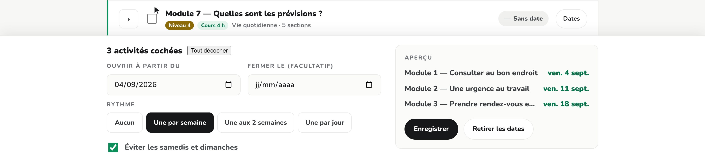
Vous donnez une date d'ouverture, une date de fermeture si vous en voulez une, puis vous choisissez un rythme.
« Aucun », si elles ouvrent toutes le même jour ; « une par semaine », « une aux deux semaines », ou « une par jour ». Et par défaut, le portail saute les samedis et les dimanches.
#rythmes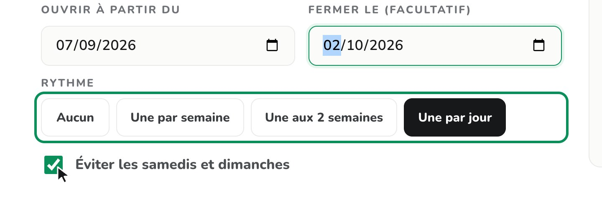
À droite, l'aperçu vous montre, avant de valider, quelle activité tombe quel jour.
Si vous vous êtes trompé, « Retirer les dates » ramène tout à zéro. Sinon, cliquez sur « Enregistrer », en bas de la barre : rien n'est posé avant ce clic. Les pastilles passent aussitôt à « à venir ».
#listeActivites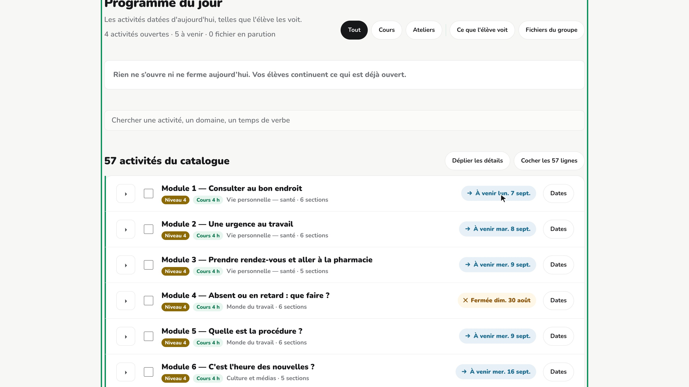
Dernier réflexe avant de quitter la page : le bouton « Ce que l'élève voit ».
Il ouvre exactement ce que votre classe a sous les yeux aujourd'hui. C'est le meilleur moyen de vérifier votre travail.
.pe-apercu-carte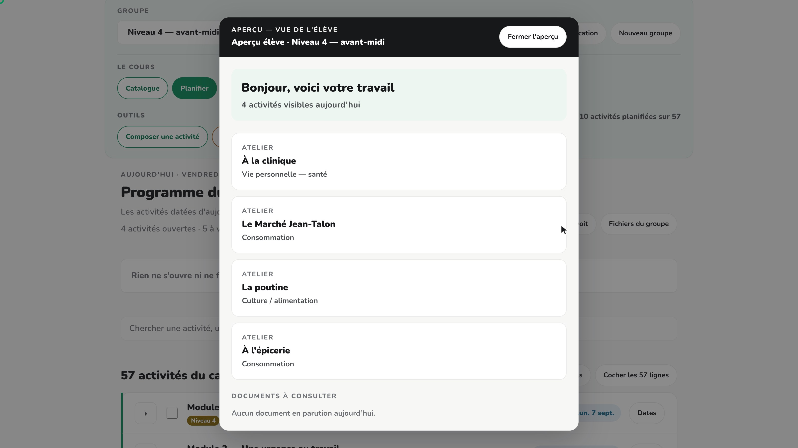
Un dernier geste, pour plus tard.
Quand vous redonnerez le même niveau à une autre session, vous n'aurez pas à redater cinquante-sept activités. « Copier une planification » reprend le calendrier d'un de vos groupes et le décale du nombre de jours qui sépare les deux sessions.
#formCopie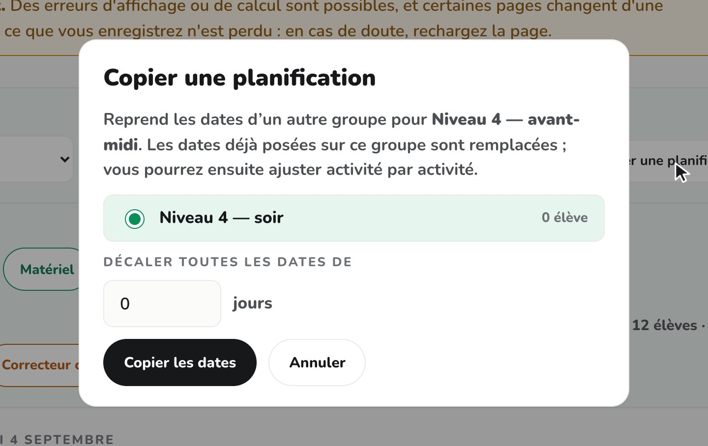
Deux précautions.
Cette copie remplace les dates du groupe où vous êtes, elle ne s'y ajoute pas. Et la date « vue en classe » n'est pas copiée. Celle-là reste votre trace personnelle, que l'élève ne voit jamais.
#formCopie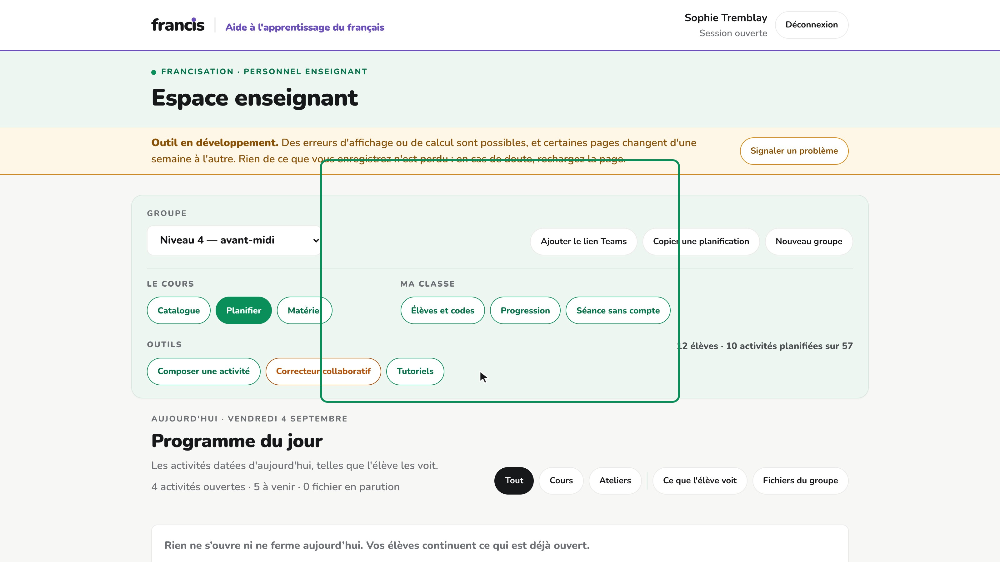
Chapitre 4Ouvrir un module par sections
Un module de cours ne s'ouvre pas forcément d'un seul bloc.
Regardez le petit chevron, à gauche de chaque rangée : c'est lui qui donne accès aux sections.
#cap-chevron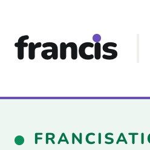
Il déplie les sections du module : « Je découvre », les défis, « Je me lance », « Je retiens des mots ».
Chacune a sa propre case et sa propre pastille.
.pe-sections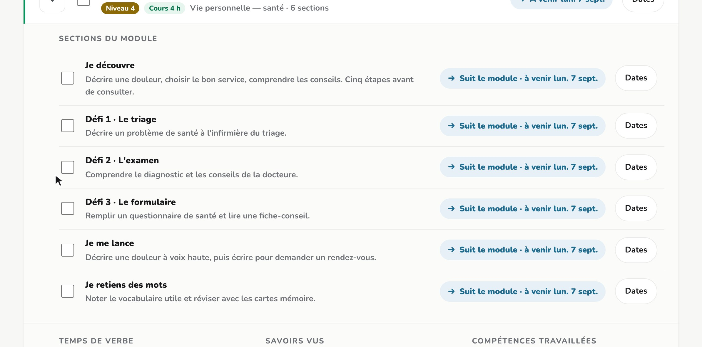
Chaque section a sa propre case et son propre bouton « Dates ».
Vous pouvez donc donner une date au « Défi 2 » comme vous en donnez une au module entier. Ce qui n'est pas encore ouvert reste grisé chez l'élève, avec sa date d'ouverture affichée.
#modaleDates .card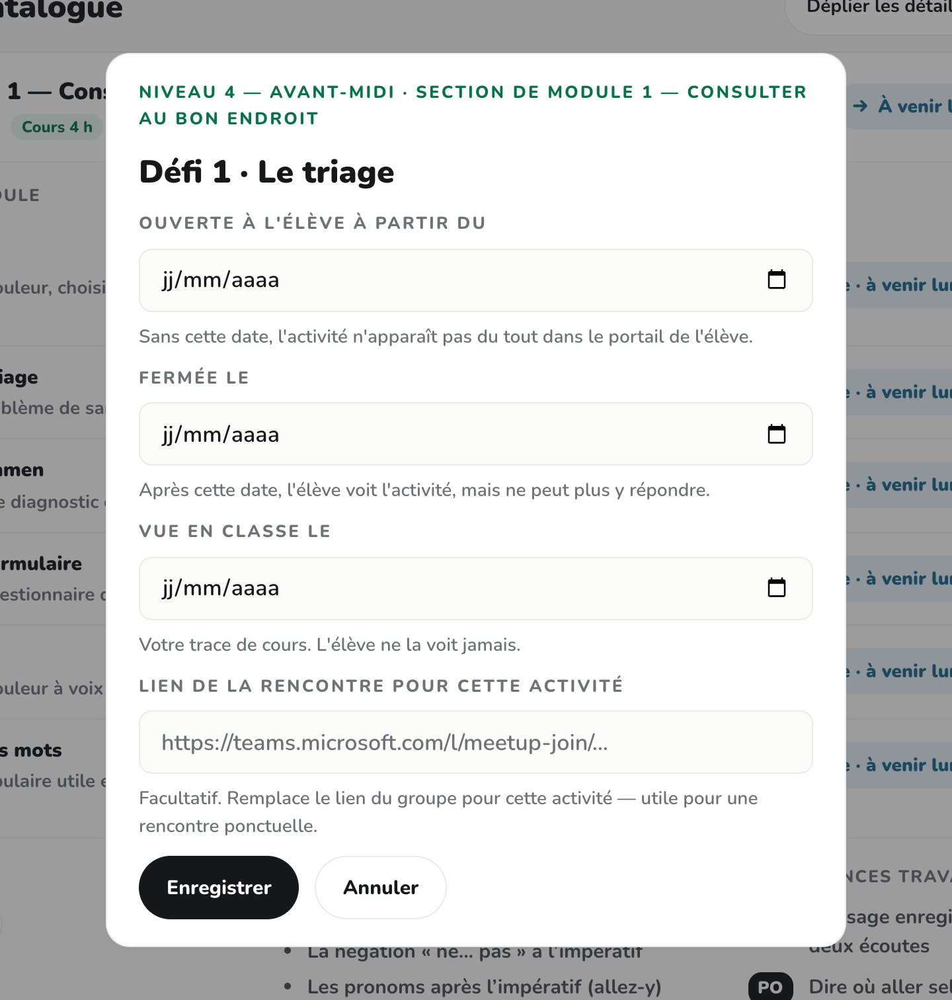
La fenêtre demande la date d'ouverture, celle de fermeture, et la date où vous l'avez vue en classe.
Et vous n'êtes jamais obligé de dater les six sections : une section sans date propre suit simplement son module. Datez ce que vous voulez retenir ; le reste s'ouvre avec le module.
.pe-sections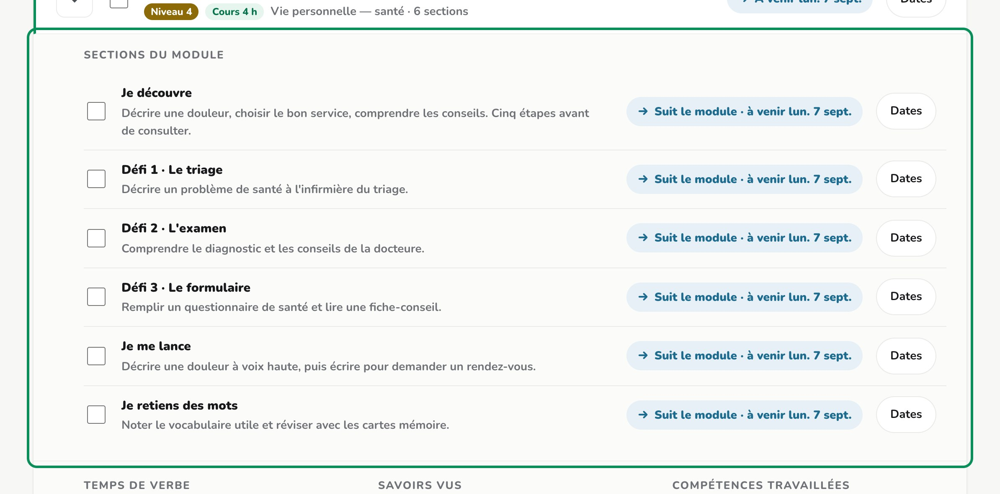
Sous les sections, le même chevron vous donne la fiche pédagogique du module : les savoirs, les actes de parole, les compétences visées et le vocabulaire. De quoi préparer votre cours sans même ouvrir l'activité.
.pe-infos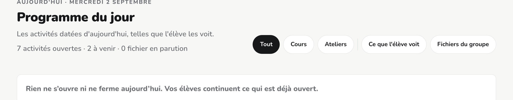
Chapitre 5Les élèves et leurs codes
Deuxième onglet : les élèves.
Et ici, une chose à savoir tout de suite. Un élève ne s'inscrit jamais lui-même. C'est vous qui l'ajoutez au groupe, et le portail fabrique son code.
.pe-contexte .card — après le geste 0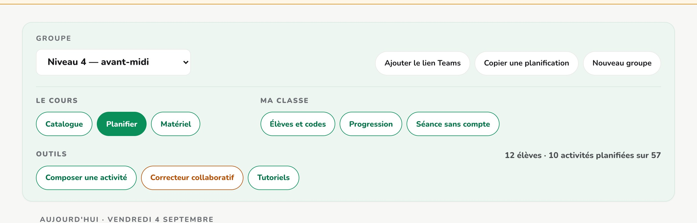
Ce code de six caractères est sa seule clé d'entrée.
Pas de courriel, pas de mot de passe à retenir, pas de compte à créer. Il l'entre dans le portail élève, et il retrouve son travail.
la fenêtre entière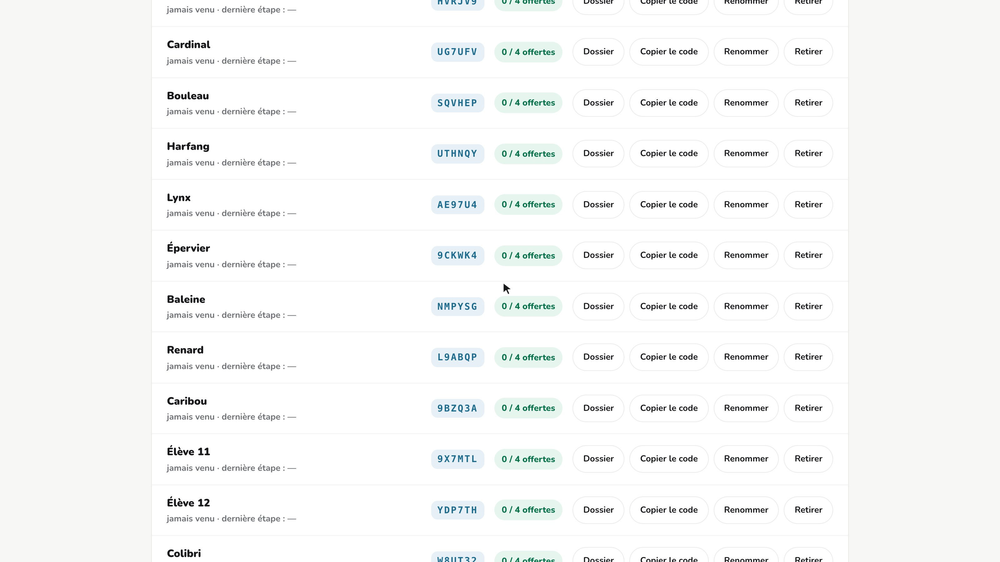
Pour ajouter quelqu'un : un pseudo, et pas le vrai nom.
Le champ le dit lui-même — Colibri, Érable, Cardinal font très bien l'affaire. C'est ce pseudo qui s'affichera partout dans le portail. Puis « Générer le code », et l'élève apparaît dans la liste avec le sien.
#listeEleves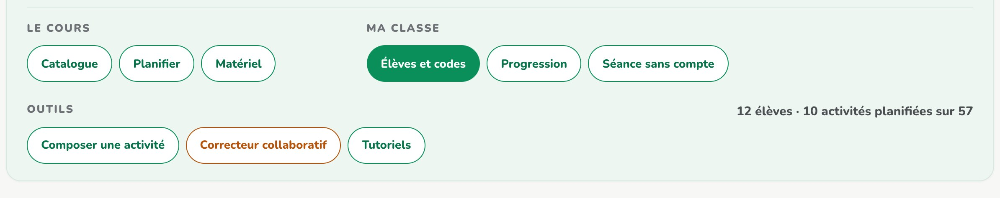
Si vous préparez une rentrée, laissez le champ vide et demandez plusieurs codes d'un coup : ils s'appelleront « Élève un, deux, trois », et vous poserez les pseudos à l'arrivée des personnes. Enfin, « Imprimer les codes » sort un billet par élève, en noir et blanc. La voici : le groupe, le pseudo, le code et l'adresse du portail. Vous découpez, vous distribuez, et la classe est en ligne.
la fenêtre entière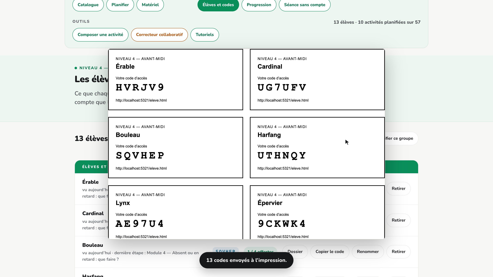
Chapitre 6Le dépôt de matériel
Dernier onglet : le dépôt de matériel.
C'est ici que vivent les présentations de séance et les fiches à imprimer produites par l'équipe. Deux vues du même écran : « Ma semaine » et « Le catalogue ».
.pe-contexte .card — après le geste 0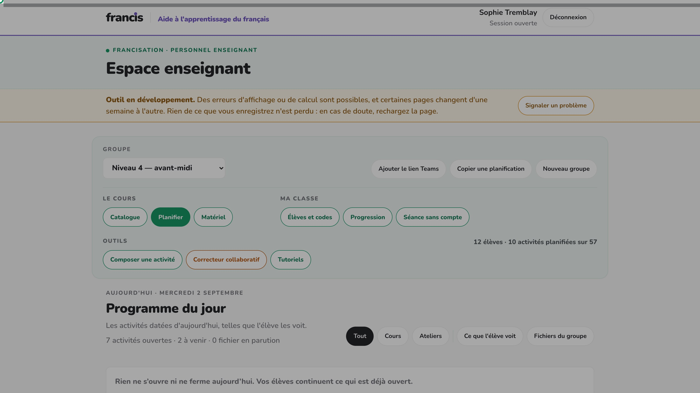
« Ma semaine » part de votre planification et vous montre, jour par jour, ce que vous avez au programme.
Pour chaque plage, l'activité prévue et ses séances offertes en pastilles.
#matColonne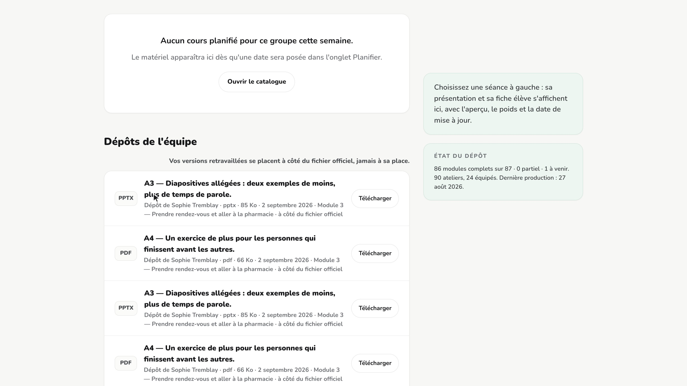
Le catalogue, lui, range tout par module.
Chaque module de cours est découpé en seize séances, codées de A un à E deux. Le code dit le bloc d'enseignement, et la barre du haut vous dit combien sont déjà produites.
#matColonne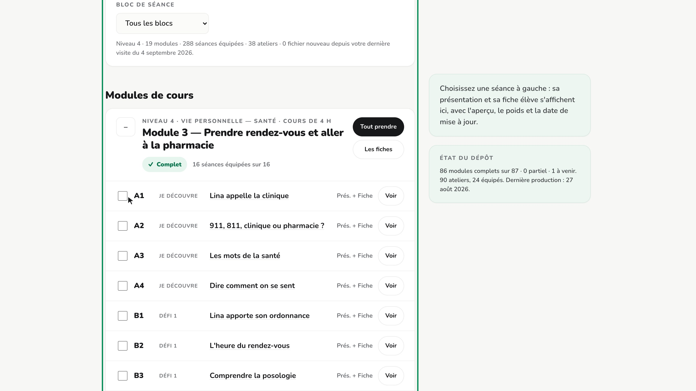
Un mot sur les seize séances, parce que ça surprend.
Vos dates de planification suivent le découpage du module en six sections. Les présentations, elles, suivent une grille de seize séances de cours. Les deux grilles ne se correspondent pas : le portail vous les offre toutes, et c'est vous qui choisissez.
la fenêtre entière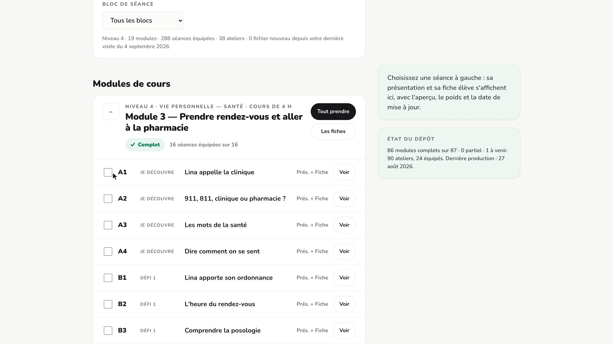
Cliquez sur le titre d'une séance : le panneau de droite vous montre la présentation, son aperçu, le nombre de diapositives, et la fiche élève qui l'accompagne. Vous téléchargez, vous ouvrez, ou vous imprimez directement.
.mat-aside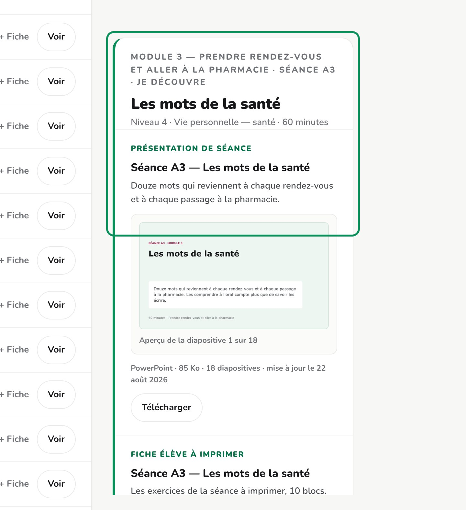
Descendez maintenant au bas du catalogue : « Dépôts de l'équipe ».
Voici deux versions retravaillées par une collègue. Sur la séance A3, des diapositives allégées — deux exemples de moins, plus de temps de parole. Sur la A4, un exercice de plus pour ceux qui finissent avant les autres.
#matColonne section:last-of-type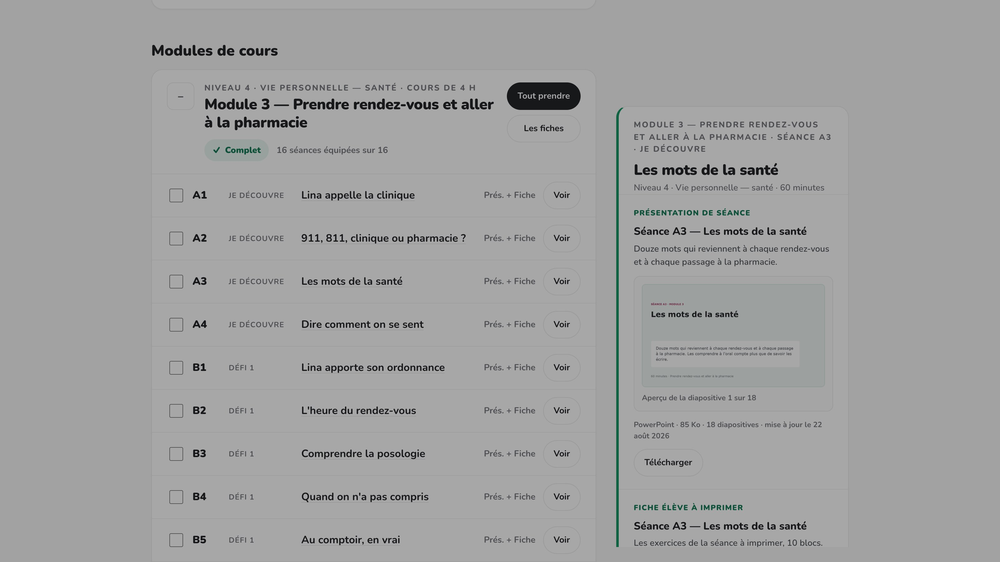
C'est ça, déposer sa propre version.
Votre fichier se range à côté de l'officiel, jamais à sa place : l'original reste téléchargeable, et la prochaine production automatique ne l'écrasera pas. Un compte administrateur peut aller plus loin et faire servir un dépôt à la place de l'officiel — là encore sans rien effacer, et ça se défait d'un clic.
la fenêtre entière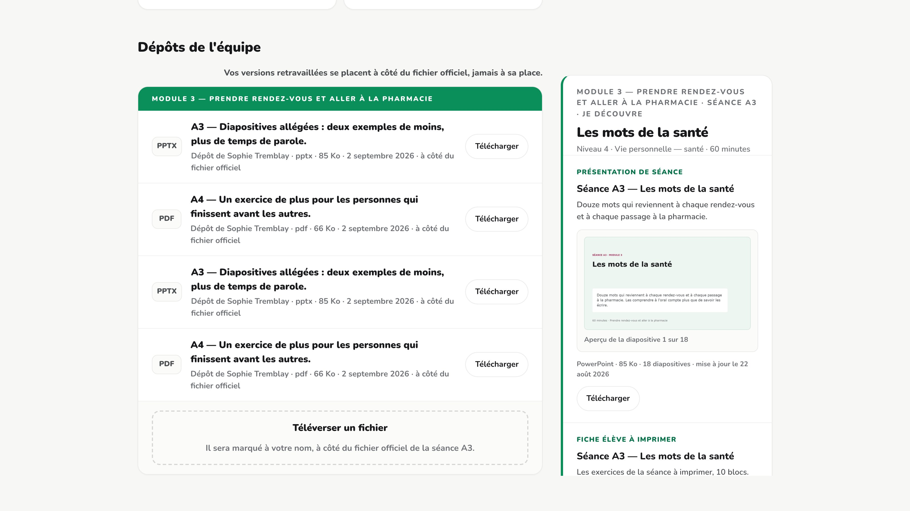
Cochez enfin plusieurs séances, et la sélection s'accumule en bas du panneau : vous descendez d'un coup toutes les présentations, ou toutes les fiches, ou vous les envoyez à l'imprimante en un seul dialogue, une fiche par page. Voilà, vous avez fait le tour. Le seul réflexe à garder : une activité qu'on n'a pas datée n'existe pas pour la classe.
.mat-aside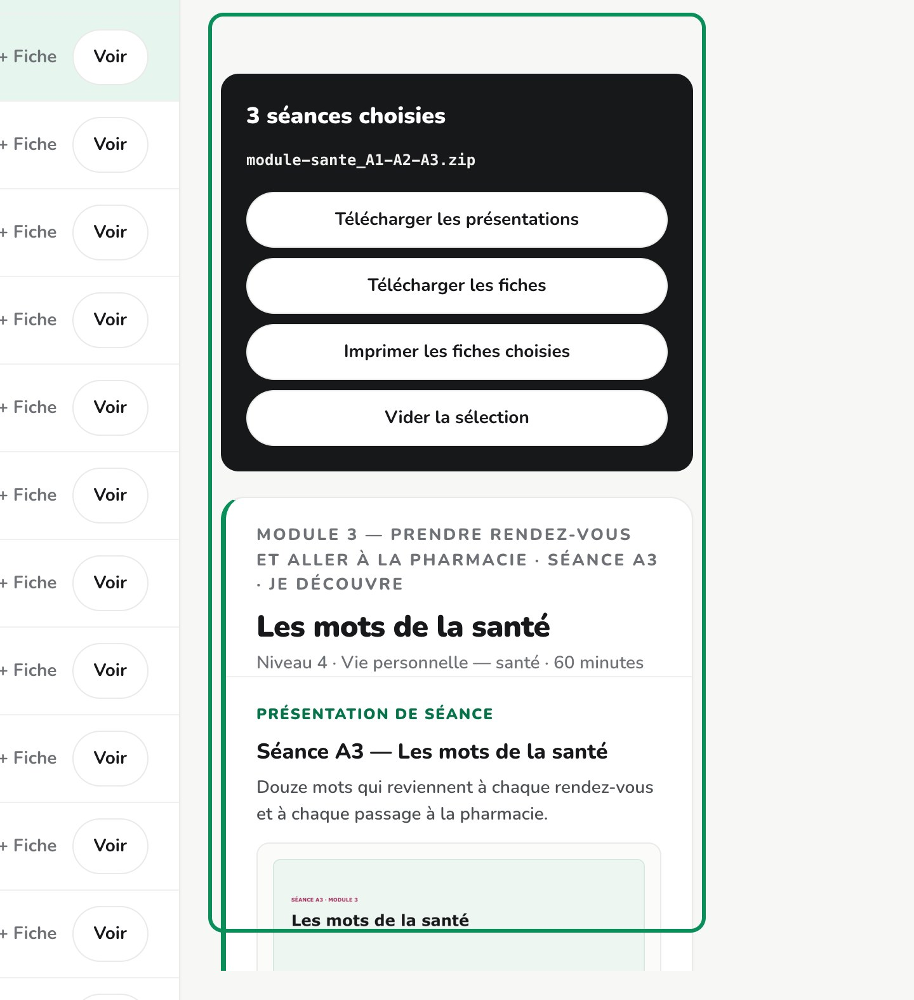
Chapitre 7Composer une activité
Dernier outil de la barre de groupe : « Composer une activité ».
Il s'ouvre dans un nouvel onglet, donc votre planification en cours n'est jamais perdue.
#lienCompositeur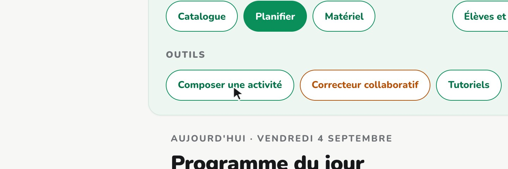
Le compositeur ne fabrique pas l'activité lui-même.
Il assemble une commande — un prompt — à partir des critères du programme officiel de francisation. Vous choisissez, il écrit.
la fenêtre entière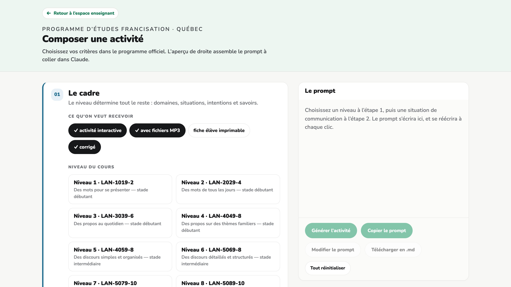
Première étape, le cadre.
Et d'abord le niveau, parce qu'il commande tout le reste : les domaines, les situations, les intentions et les savoirs qui vous seront proposés en dépendent. Ici, niveau 4.
#zone-niveaux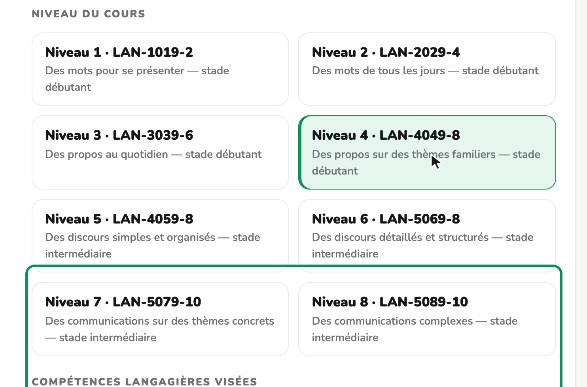
Puis la compétence travaillée, la durée de l'activité et la modalité de travail.
Trois clics qui disent au modèle ce qu'il doit préparer : ici une production orale, en deux heures, en dyade.
la fenêtre entière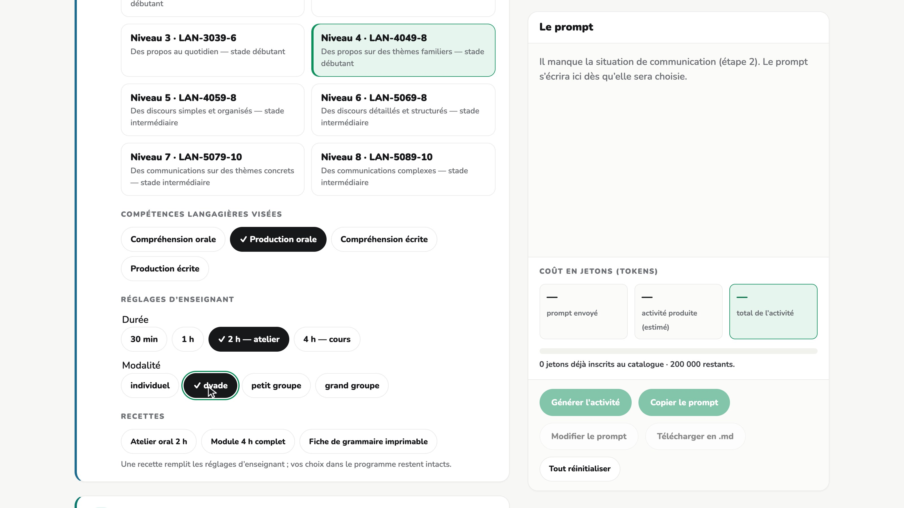
Deuxième étape, la thématique.
Le domaine de vie, puis la situation de communication. Ces listes ne sont pas inventées : ce sont celles que le programme prescrit pour le niveau que vous venez de choisir.
#zone-thematique, #sel-situation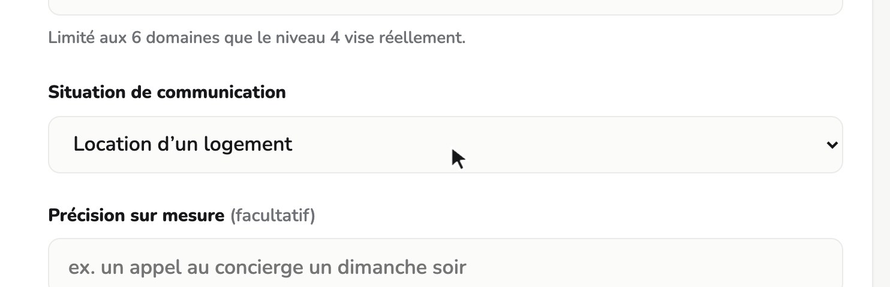
Troisième étape, les intentions de communication.
Le programme en prescrit une liste pour cette situation, et une seule : ici, s'informer sur les conditions de location, et exprimer ses besoins ou ses préférences. Cochez celles que votre activité doit faire travailler.
#zone-intentions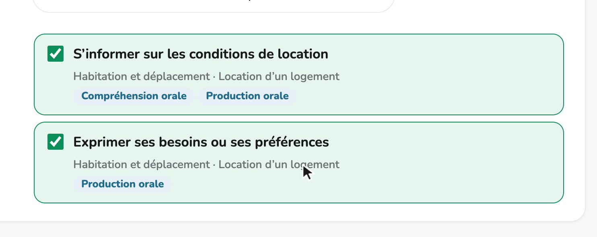
Quatrième étape, les savoirs.
Il y en a plus de deux cents au niveau 4 : le champ de recherche les resserre. Tapez un mot, et vous ne voyez plus que ce qui s'y rapporte. Cochez la grammaire et le vocabulaire visés.
#zone-savoirs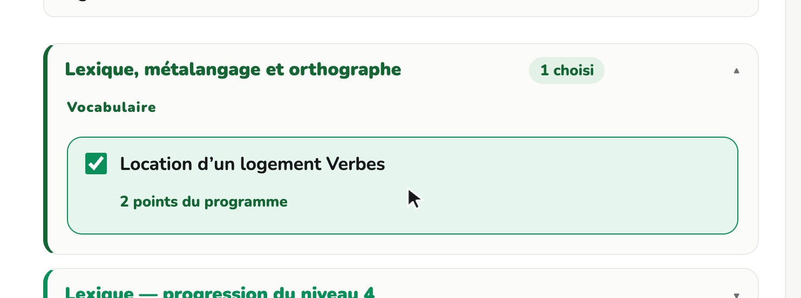
Vous pouvez aussi joindre votre propre documentation : un texte de départ, une annonce trouvée en ligne, une situation vécue en classe. « Ajouter un document » ouvre un champ où vous la collez, et l'activité se construira autour.
#zone-docs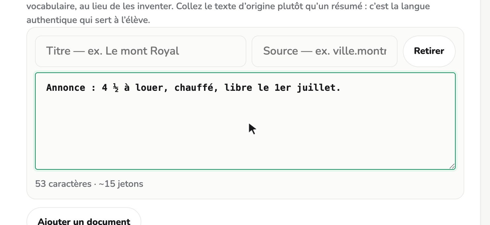
Pendant que vous cochez, le compteur en haut suit le coût en jetons : ce que le prompt enverra, ce que l'activité produira, et le total. Vous savez ce que vous engagez avant de lancer quoi que ce soit.
#b-copier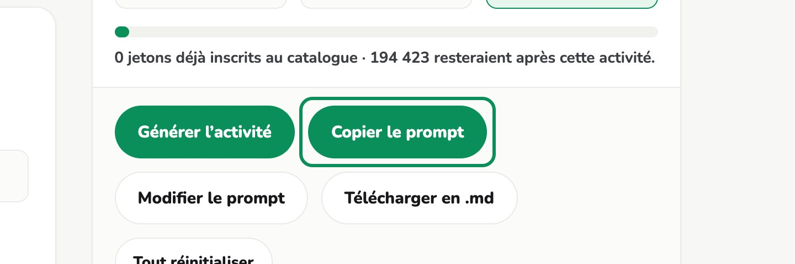
Et le prompt s'écrit à mesure, en bas.
Il reprend le niveau, le sigle du cours, la situation, les intentions et les savoirs que vous avez cochés, dans les termes exacts du programme.
#sortie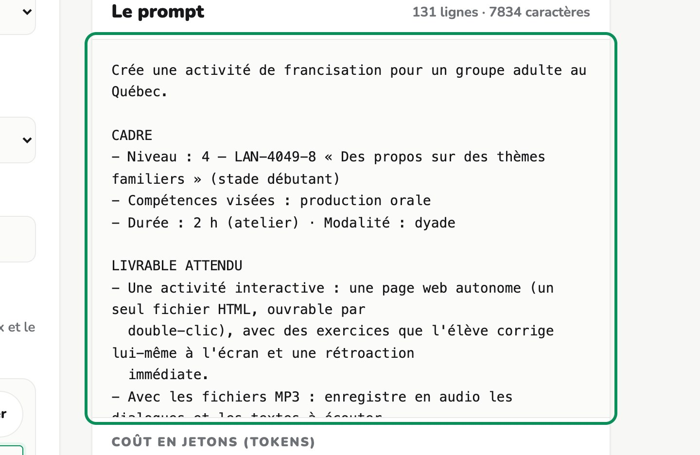
Il ne reste qu'à le prendre.
« Copier le prompt » pour le coller dans Claude. « Modifier le prompt » si vous voulez ajuster une phrase, « Télécharger en point m d » pour le garder, et « Tout réinitialiser » pour recommencer une autre activité.
#b-copier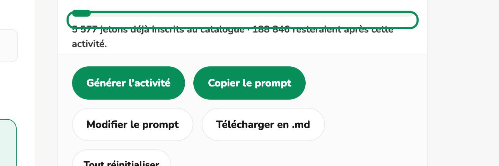
Chapitre 8La séance sans compte
Il arrive qu'une classe doive travailler sans compte : des élèves de passage, un groupe qui commence, des téléphones prêtés. Le mode séance sert à ça. Vous ouvrez une séance sur un module, vous imprimez une feuille, et la classe entre avec un code — sans nom, sans mot de passe, sans rien à retenir.
.pg-zone--classe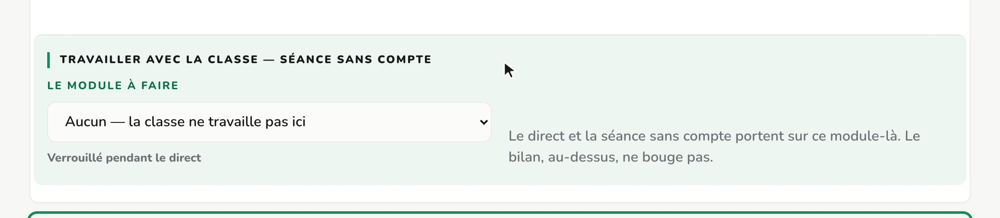
Tout part d'ici, dans « Travailler avec la classe ».
Choisissez d'abord le module à faire : c'est lui que la séance ouvrira, et rien d'autre. Un code de séance donne accès à un seul module, jamais à tout le catalogue du groupe.
.pg-zone--classe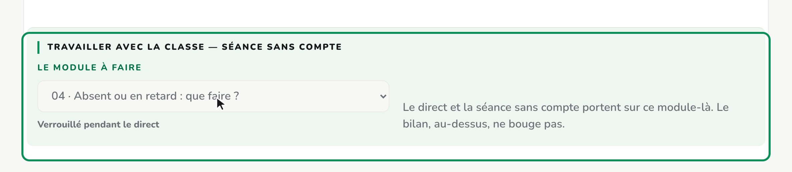
Puis, dans la barre noire, cliquez sur « Ouvrir la séance ».
Le portail tire un code de six caractères et la porte est ouverte. Personne n'a eu à créer de compte.
#pgDirect — après le geste 1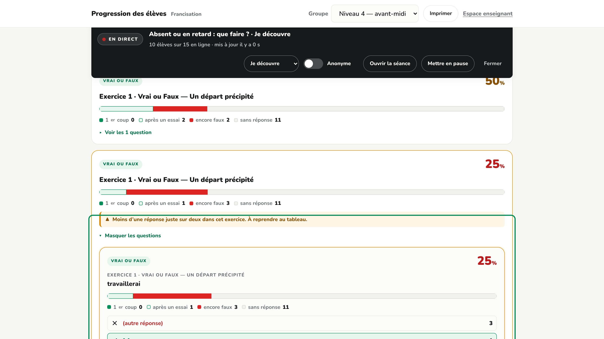
Le bouton « La feuille » remplace alors celui d'ouverture.
Elle porte le code en gros, un carré à faire scanner, et l'adresse à taper pour ceux qui n'ont pas d'appareil photo. Elle s'imprime en noir et blanc : c'est la photocopieuse de l'école qui la tire.
#pgDirectVoici la feuille.
L'élève scanne le carré ou tape l'adresse, entre le code, et le module s'ouvre. Aucun nom ne lui est demandé, et il n'a rien à installer.
.feuille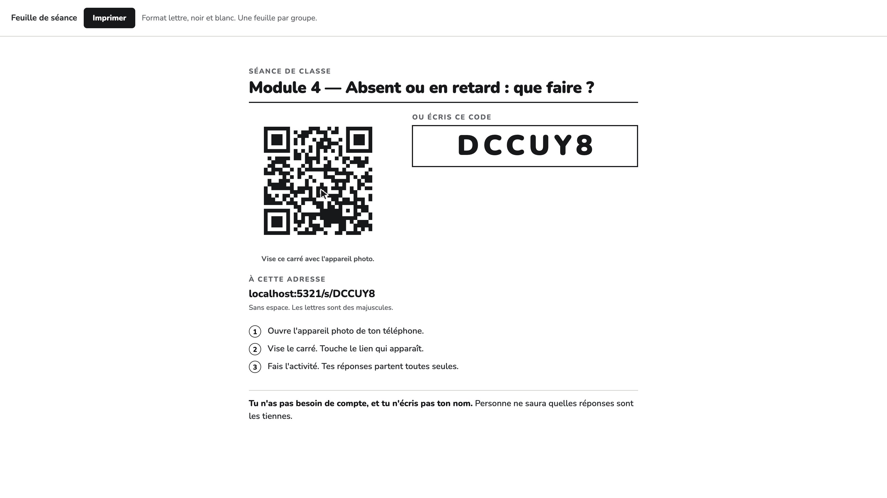
Ce que les appareils répondent remonte dans le tableau du direct, exactement comme les réponses des élèves inscrits.
Ils y paraissent sous « Participant » suivi d'un numéro — c'est tout ce que le portail sait d'eux.
#pgDirect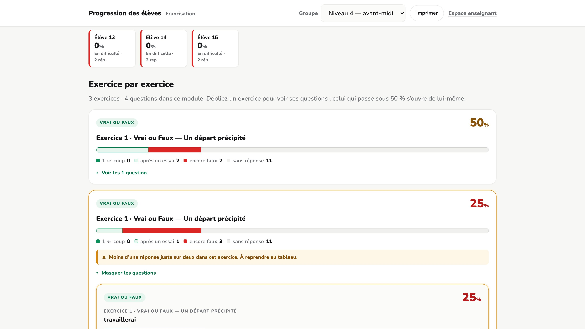
Chapitre 9Suivre la classe
« Progression des élèves » répond à une seule question : où en est la classe.
C'est la page qu'on ouvre le soir, après le cours, ou pendant qu'on circule entre les rangées.
.pg-titre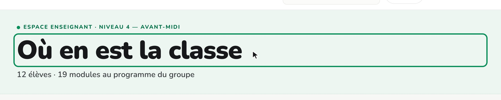
En haut, « Le bilan » : le module regardé et la période.
Trois périodes, et elles ne disent pas la même chose. « Aujourd'hui », c'est la soirée même. « Depuis l'ouverture du module », c'est depuis la date que vous avez posée pour ce groupe. « Depuis toujours », c'est tout.
#pgZoneBilan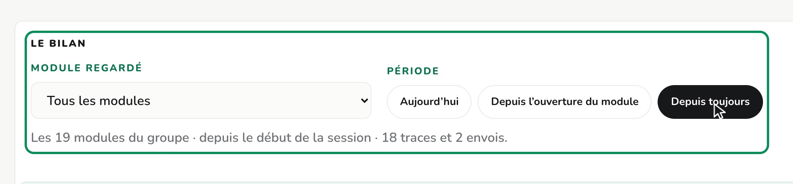
Le bilan tient en quelques chiffres : combien d'élèves sont entrés, combien ont terminé, le taux de bonnes réponses du premier coup, ce qui a été envoyé. Le taux du premier coup est le plus parlant des quatre : il dit si la classe comprend, pas seulement si elle avance.
.pg-tuilesDessous, une rangée par élève : l'avancement, le taux du premier coup, ce qu'il a envoyé, sa dernière trace.
Un élève qui n'est jamais venu le dit en toutes lettres — c'est souvent l'information la plus utile de la page.
.pg-tableLe chevron au bout d'une rangée déplie ce que cet élève a envoyé pendant la période : ses textes, ses enregistrements.
Quand il n'y a rien, il n'y a pas de chevron — la page ne promet jamais du vide.
.pg-tableEt pendant que la classe répond, la barre noire du direct montre la réussite question par question.
Les questions en alerte sont celles que la moitié du groupe rate : c'est là qu'il faut revenir, tout de suite, au tableau.
#pgDirectDeux réglages valent d'être connus.
« Anonyme » remplace les noms par des numéros : c'est fait pour projeter un texte au tableau sans exposer son auteur. Et « Mettre en pause » arrête le rafraîchissement, pour qu'un onglet oublié ne compte pas des élèves partis comme des élèves en ligne.
#pgDirectChapitre 10Le dossier d'un élève
La page précédente répond à « où en est la classe ».
Celle-ci répond à « qu'a fait cette personne ». On y entre par le nom de l'élève, ou par le bouton « Dossier » au bout de sa rangée.
.pg-tableLe dossier s'ouvre sur un coup d'œil : les modules commencés, les activités terminées, le taux du premier coup, ce qui a été envoyé. C'est le même élève que dans le tableau du groupe, vu de près.
.fe-tuilesPuis, activité par activité : les zones faites, le taux du premier coup, les erreurs.
Une activité ouverte mais pas terminée se voit ; une activité jamais ouverte aussi.
.fe-tableLe chevron d'une rangée ouvre ce que l'élève a remis dans cette activité : son texte, son enregistrement, et la rétroaction qu'il a reçue. Rien n'est reconstitué : ce sont les fichiers qu'il a envoyés lui-même.
.fe-tableEn tête du dossier, un bouton : « Envoyer un point express ».
C'est l'endroit prévu pour ça — vous venez de voir la difficulté, vous envoyez à cet élève un exercice de dix minutes sur ce seul point. Le portail ne le suggère jamais tout seul : le diagnostic reste le vôtre.
.fe-modale — après le geste 3